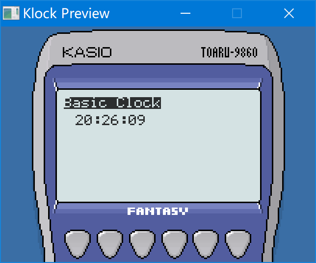

Klock Plus

Klock Plus 是一个时钟App展示工具，可以运行在PC / CASIO fx-9860 / WinCE等平台上。
并且可以在PC上构建用户自定义的表盘。
此项目按照 BSD 协议开源。
下载
在这里下载当前版本的 KlockPlus。包含可执行文件与构建好的样例表盘。
安装
1. 在fx-9860系列上安装
将KLOCKP.G1A安装在 Flash Mem，并将需要展示的表盘文件 *.kwf 放置在 Flash Mem 或者 SD Card，启动程序即可展示。
2. 在 Windows CE 上安装
2.1 Windows CE1.0 & CE1.01
因为CE.1x并不支持 GetModuleFileName API。所以需要把所有KWF文件放在根目录下。在其他地方运行KlockP开头的exe即可。
2.2 Windows CE 2.x
在CE2.x下把exe与KWF文件放在同个目录下即可。
2.3 更高版本
可以启动，但是文件不能被正确列出，请按照CE1.x的情况把KWF文件放在系统根目录下。
制作自定义表盘
用户可以自己编写 KBasic Script并且使用KlockPlus Builder来构建KWF格式的表盘。
关于 KBasic
KBasic 是一种表达绘制流程的简单脚本语言，使用Builder构建，编译为KRT字节码（一个简单的基于堆栈的虚拟机）。
表盘 App 加载后，会后循环执行KBasic的代码，并且传入时、分、秒、毫秒等信息来执行绘制表盘，绘制的速度大约是 12 FPS。
样例
x# 打印一句提示语print(0, 0, "Basic Clock", 1)# 拼接字符串，格式化时分秒let str_time = zeropad(hh, 2) & ":" & zeropad(mm, 2) & ":" & zeropad(ss, 2)# 打印时间字符串print(8, 12, str_time, 0)
更多的样例请参考 samples/文件夹下的kbs文件。
构建表盘的二进制文件
假设上面的样例保存为文件
sample0-basic.kbs。在命令行输入下面的命令来构建
xxxxxxxxxx# -i 输入脚本文件名字# -o 输出二进制文件名# -d 可选选项，附加之后会打印调试信息klockbuilder build -i sample0-basic.kbs -o sample0.kwf输入以下的命令来预览
xxxxxxxxxx# -i 输入二进制文件名字# -d 可选选项，附加之后会打印调试信息klockbuilder preview -i sample0.kwf当然，也可以选择直接双击
klockbuilder.exe，会弹出选择文件的对话框，选择文件来预览。

KBasic 有五种指令：
| 指令 | 样例 | 功能 | 附注 | |
|---|---|---|---|---|
| 1 | image 指令 | image "bitmap_file_name.bmp" | 加载 bmp 格式的图片 | 只接受色深为 24bit 的 bmp |
| 2 | let 指令 | let var_name = expr | 将 expr 的计算结果赋值给变量 var_name | 请注意，如果没有let在行首，会被理解为使用=（等于）操作符的表达式，并不会报错 |
| 3 | 标签指令 | label_name: | 跳转标签 | |
| 4 | goto 指令 | goto label_name | 无条件跳转到指定标签 | |
| 5 | if 指令 | if expr goto label_name | expr 计算结果不为0时跳转到指定标签 | |
| 6 | 表达式 | zeropad(hh, 2) & ":" & zeropad(mm, 2) 1+2/sin(ms) | 可以计算的表达式 |
预定义变量
| 变量名 | 功能 | 附注 |
|---|---|---|
hh | 当前时间的小时 | |
mm | 当前时间的的分钟 | |
ss | 当前时间的秒 | |
ms | 当前时间的毫秒 | 受到 fx-9860 RTC 功能的限制，毫秒的精度是基于1/128秒的，需要注意。 |
表达式
表达式可以有两种值，字符串 RVT_STRING 与 数值RVT_NUMBER
表达式的操作符
| 优先级 | 操作符 | 功能 | 样例 |
|---|---|---|---|
| 500 | - | 取负数 | -a -1.5 |
| 200 | * | 乘法 | a * b |
| 200 | / | 除法 | a / b |
| 200 | % | 取模 | a % b |
| 200 | \ | 整数除法 | a \ b |
| 100 | + | 加法 | a + b |
| 100 | - | 减法 | a - b |
| 90 | & | 字符串连接 | "hello " & "world & 2" |
| 60 | > | 大于 | a > b |
| 60 | < | 小于 | a < b |
| 60 | >= | 大于等于 | a >= b |
| 60 | <= | 小于等于 | a <= b |
| 50 | = | 等于 | a = b |
| 50 | <> | 不等于 | a <> b |
| 50 | ! | 逻辑非 | !a |
| 40 | && | 逻辑与 | a && b |
| 30 | || | 逻辑或 | a || b |
表达式支持的内建函数
| 函数标号 | 函数声明 | 返回值 | 附注 |
|---|---|---|---|
| 0 | sin(a) | RVT_NUMBER | 正弦 |
| 1 | cos(a) | RVT_NUMBER | 余弦 |
| 2 | tan(a) | RVT_NUMBER | 正切 |
| 3 | sqrt(a) | RVT_NUMBER | 平方根 |
| 4 | exp(a) | RVT_NUMBER | 指数 |
| 5 | abs(a) | RVT_NUMBER | e为底的指数函数 |
| 6 | log(a) | RVT_NUMBER | 对数 |
| 7 | rand() | RVT_NUMBER | 范围在区间[0, 1)的随机数 |
| 8 | clr() | RVT_NUMBER | 清除屏幕内容。总是返回 0 |
| 9 | zeropad(num, digits) | RVT_STRING | 将数值转化为字符串，长度不足的时候在前方补充0 |
| 10 | printmini(x, y, str, rev) | RVT_NUMBER | 打印字符串，字体尺寸4x6。总是返回 0 |
| 11 | print(x, y, str, rev) | RVT_NUMBER | 打印字符串，字体尺寸6x8。总是返回 0 |
| 12 | gprint(x, y, str, image_index) | RVT_NUMBER | 将指定的图片当做包含字符:与字符0-9的字体，打印字符串总是返回 0 |
| 13 | line(x0, y0, x1, y1, dot) | RVT_NUMBER | 画线，dot为1是黑色，dot为0时白色。总是返回 0 |
| 14 | blt(x, y, image_index) | RVT_NUMBER | 在指定位置绘制图片。总是返回 0 |
| 15 | p(expr) | RVT_NUMBER | 在控制台输出参数的内容，只在pc上有效。总是返回 0 |
| 16 | gprintv(x, y, str, image_index) | RVT_NUMBER | 与gprint功能相同，但是打印方向是竖向。 总是返回 0 |
还有什么
我为fx-9860GII设计了可以3D打印的表带：
可以真的把fx-9860当做手表戴在手腕上，稍后你可以在Thingiverse上找到它。
其他
此项目的 KlockPlus Builder 使用了 SDL，并在分发时附带了 SDL.dll。如果想要自己修改、构建 KlockPlus Builder，需要在你的工具链中安装SDL 1.2。
此项目的字体使用了 Portfolio 6x8 与 Tom Thumb 4x6。
此项目的吉祥物：狗大哈 · Husky The Big。记得谢谢狗大哈！